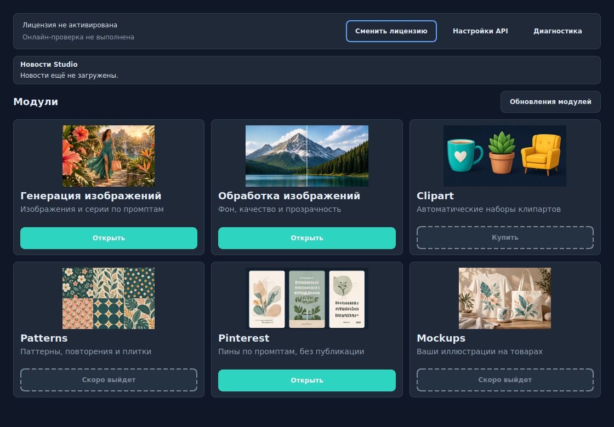
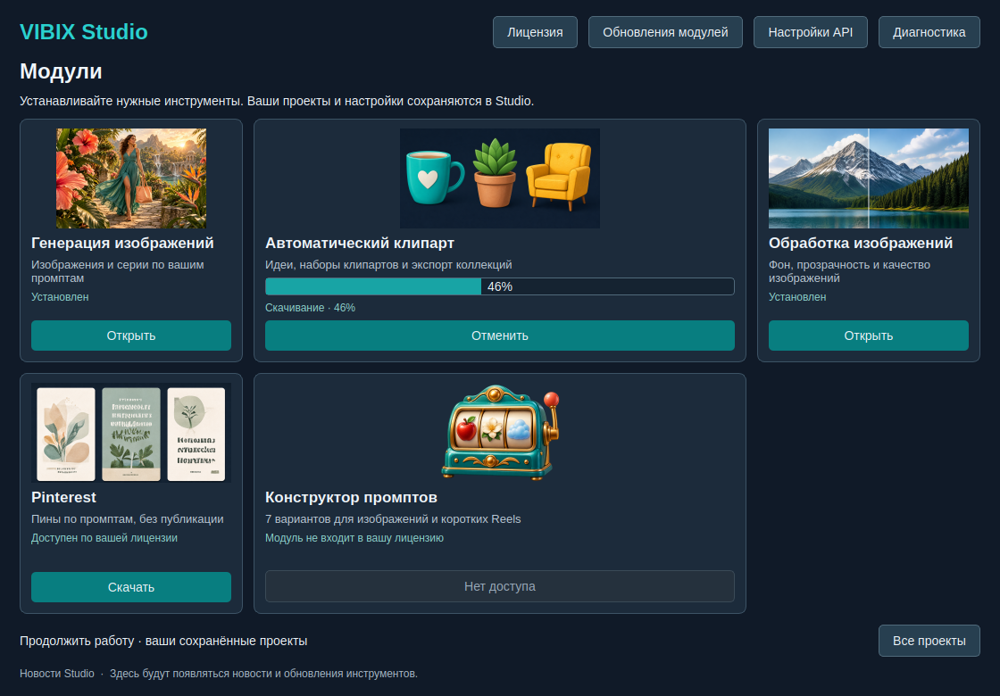
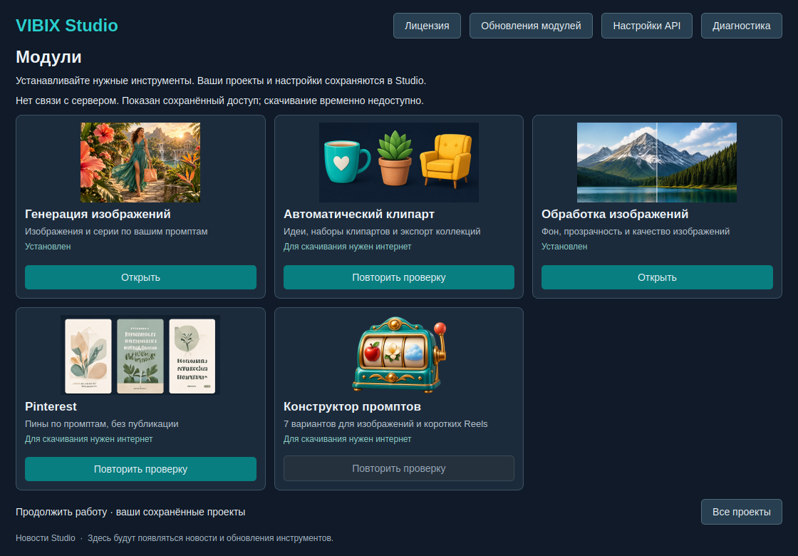
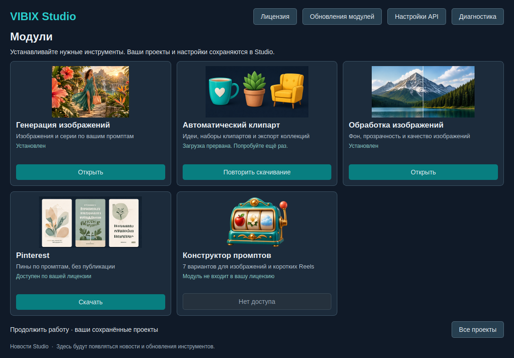
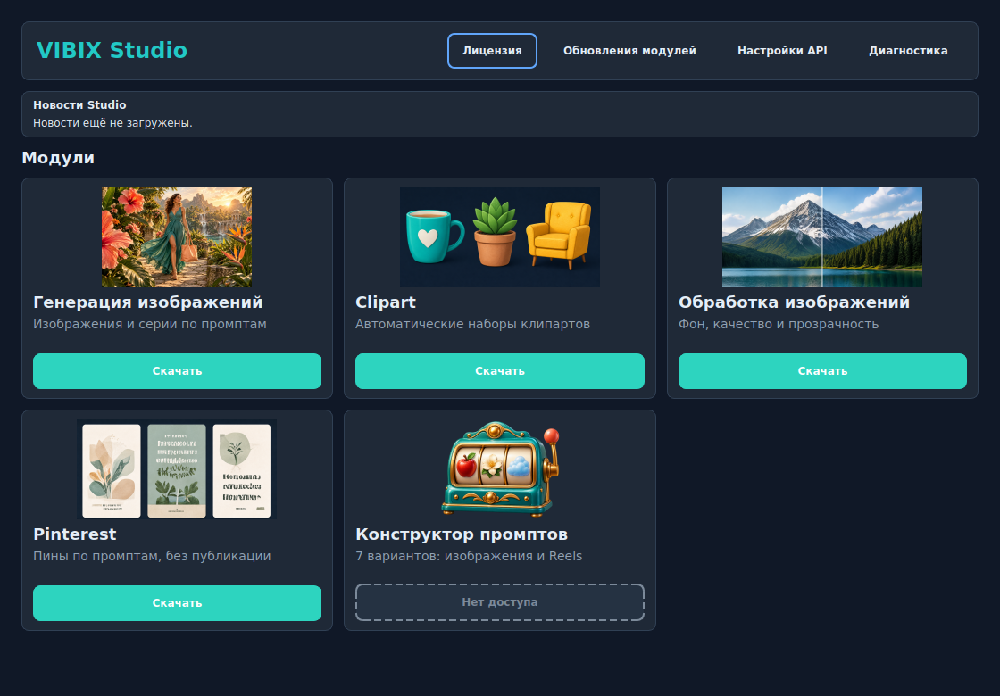
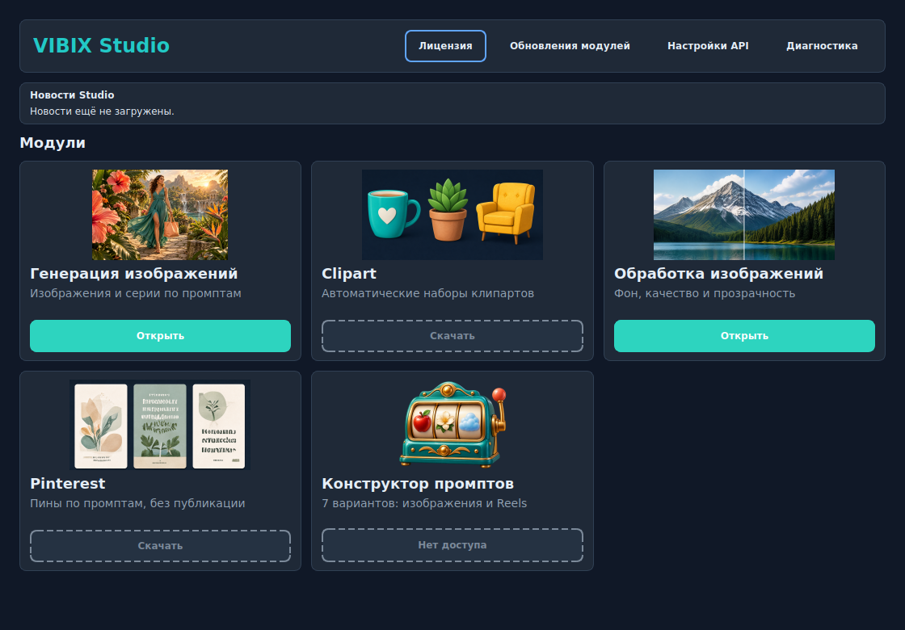

Макеты для согласования. Кнопка «Купить» отсутствует. Сервер и лицензии не изменяются.




1120×780. Тестовые состояния; прежние обложки112px и новый автомат идей. Установка показывает прогресс и отмену в существующем окне модулей.

